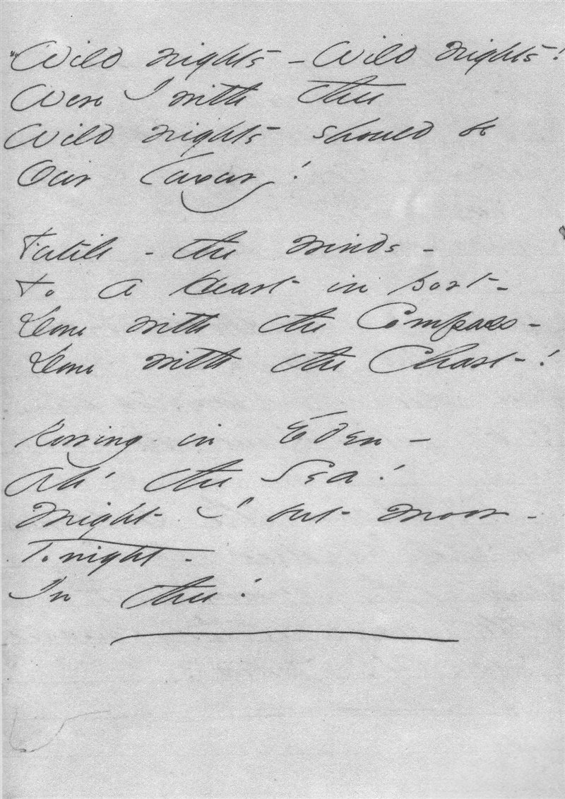

En los siguientes años, la obra de Emily Dickinson empezó a ver la luz. Los poemas se publicaron en varias ediciones, siguiendo un orden completamente arbitrario (ya que la autora nunca puso fecha a sus versos) y quedando divididos en cuatro grupos: Vida, Naturaleza, Amor y, por último, Tiempo y eternidad. La edición en inglés más completa de la obra de Dickinson se publicó en 1998, más de cien años después de la obra de la autora. Se desconoce la razón por la que Emily Dickinson se negó a compartir sus creaciones en vida. Muchos apuntan a que, más allá del éxito, lo que la autora buscaba era perfeccionar y desarrollar al máximo su voz poética. En sus versos, caracterizados por una puntuación propia y su peculiar uso de las mayúsculas, Dickinson habla de los cambios de estación, de las flores del campo, de la muerte, el amor, la enfermedad, la pérdida, la esperanza y una infinidad de temas impregnados de su extraordinaria sensibilidad, pasión por la naturaleza y descomunal capacidad de observación. La poesía de Emily Dickinson es única y prácticamente inclasificable. Por eso, sus versos han ido ganando importancia y reconocimiento a medida que han pasado las décadas, acrecentando la sensación de que Emily Dickinson escribió para los lectores del futuro. “Si tengo la sensación física de que me levantan la tapa de los sesos, sé que eso es poesía”, afirmó la autora. Su legado, sin duda alguna, hace más que justicia a esa apasionante experiencia que ella definió como poesía.
